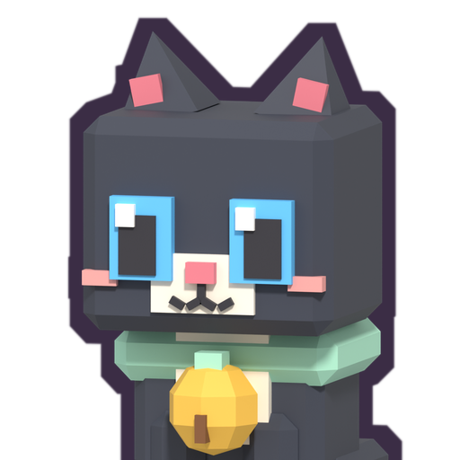

Clean a Cat: the opening, storyboard
Draft for Derek, 24 Nov, third version: the truck shot you picked, the carry from your clip and the close-up wash view. Pictures are stand-in poses from our models; the words and pointers on top are the planned screens. All of it sits behind off switches.
1The truck: a quick intro shot your pick: A
The camera takes about 3.7 seconds for the truck and the box, then snaps back behind you. No skip button, because it is over before one would help.
0:01Bump!The truck hits the bump, jolts and the back door swings open.
0:02Thud.A plain brown box flies out, lands by you and bounces once. The truck drives on.
0:04Your camera.The box wiggles and meows. The screen dims round it, and you tap it.
2Pick him up and carry him in
0:05A muddy kitten!No name and no collar yet. You tap him to lift him out.
0:07In your arms.He lies across your arms with his head at your shoulder, purring (the hold from your clip). Green arrows lead to the tub, and you tap Wash him there.
0:12The wash view.The camera eases in close. Each step is taught here, one at a time: scrub the mud, then brush him.
3He becomes Suds

Meet Suds!
★★★
He's your spa cat now!
Open the spa!
0:35Clean!He shakes off, the collar and bell pop on, and the card at the side names him. Always 3 stars.
Let's open the spa!
A customer is on the way.
0:40Home.The camera eases back out. Suds hops onto his bed by the door and from now on points out new things in a little bubble.